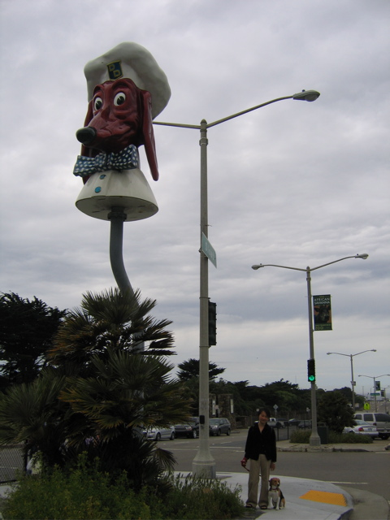

<--Previous Up Next-->

Doggie Diner head
This head, now permanently installed in the middle of Sloat Boulevard near the zoo, has been the subject of preservationist controversy and of the Zippy the Pinhead comic strip. On a gray May day Hux paid his respects.